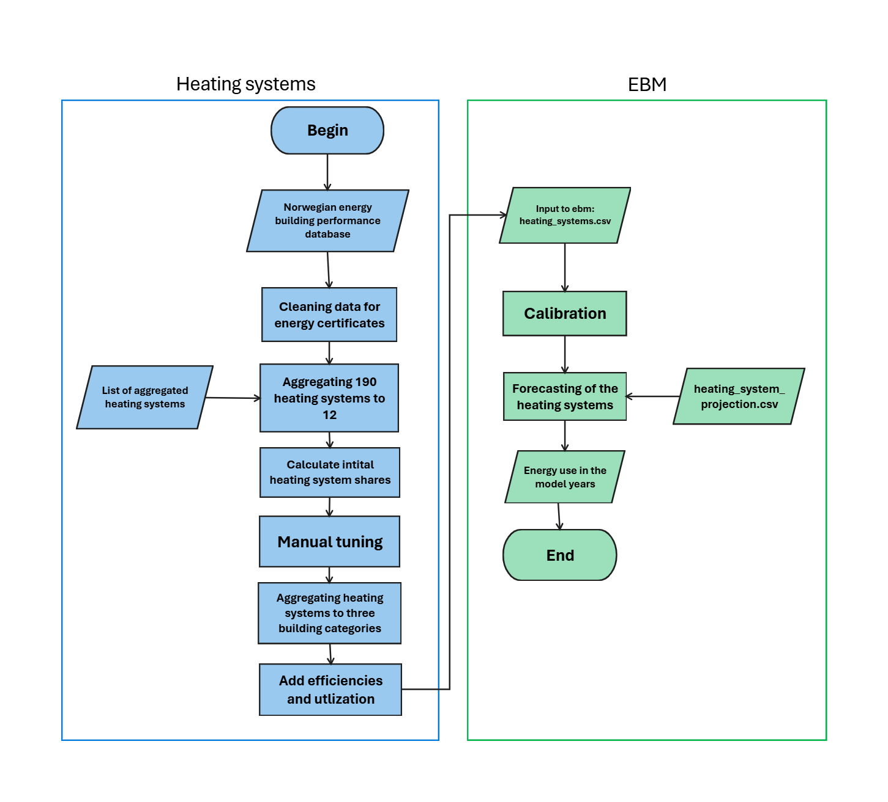

Heating systems
The composition of heating systems used in the building stock is the link from the computed energy need to energy use. Energy need states what the building requires in terms of space heating, non-substitutable electrical use and domestic hot water. The composition of heating systems in the building stock assigns specific heating technologies to meet the energy demand for space heating and domestic hot water. Various heating technologies have different efficiencies and energy products which then determines the energy use.
A combination of different heating systems can be assigned to each building category and each age group (building code). It is also possible to do this on an aggregated level, e.g. giving all non-residential area the same heating system. For instance, 5 % of the house area use only direct resistance heating to heat the home, while 56 % of the house area use a combination of direct resistance heating, an air-to-air heat pump and a wood stove. The composition of heating solutions can be changed over time in the forecast period and the initial heating systems share can be adjusted in the calibration process.
The input to EBM is the aggregated composition of heating systems houses, apartment blocks and non-residential buildings, in other words the share of e.g. the area in houses that use the different heating systems. The source of the initial composition is the Norwegian energy performance building database which has been processed outside of EBM and described under data assumptions NVE. As part of this processing, the use of different energy products in the different building categories is compared with the national energy balance to fine tune the distribution of the various heating technologies. The process is described under model functionality and data assumptions NVE and an overview is shown in the flowchart below.
{kind=link}
Model functionality
Making changes to heating systems
The easiest way to change the initial shares of heating systems is through Kalibreringsark.xlsx as part of the calibration process described here Calibrating the model. The input file 🧾 heating_system_initial_shares.csv remains unchanged with this method. It is also possible to change the heating systems share in the input file. All combinations of building code and building category are given their own heating systems share. In the input file, the shares are indentical within the building groups of house, apartment block and non-residential building.
Making changes to the efficiency, energy product or load share factor can be done for each of the 12 combinations of heating systems in the input file 🧾 heating_system_efficiencies.csv. An overview of the heating system combinations can be found in the Tables and glossary subchapter.
Data assumptions NVE
Selecting certificates
The initial heating system shares are based on the Norwegian energy building performance database. The database contains information on the energy class of certified buildings. There are 1,2 million certificates in total spread out among the 13 building categories, however for some categories, especially non-residential buildings, the number of certificates are low. Some cleaning is done on the dataset to filter out misleading certificates and duplicates. The cleaning steps done are the following:
Removed certificates that were missing building category, heated floor area or energy performance label.
Removed certificates where calculated delivered energy per is above 1000 kWh/m 2.
If a certificate has been issued to the same address more than once, the most recent certificate is kept. This is done for all building categories except for apartment blocks or hospitals as one address can contain multiple buildings or apartments. For apartments the apartment number is often missing.
After these three steps there are about 1 million certificates remaining. The associated building code classification is added to the certificates based on the supplied. building year.
Determining heating systems
The certificates have a column for “heating system”. This column can vary from one or more energy products to a combination of various technologies. About 130 000 certificates do not have this information. For certificates missing this information an estimate is done based on the combination of “delivered energy”. For example, if the certificate has values for “bio” and “electricity” the heating system is set to “Electricity - Bio”. This results in 190 different heating systems which are aggregated to 12 categories shown in the table below, together with the corresponding technology for the different loads and domestic hot water. The abbreviations in the “Heating systems” column are explained in the table heating systems abbreviations under the Tables and glossary section.
Manual tuning of heating systems
The process described above gives a good starting point for the distribution of heating systems, but manual tuning is needed. The manual tuning of heating systems is done to roughly hit the energy use from statistics before calibration. Manual tuning is done by shifting a percentage of one heating system to another on a per building and building code basis. An example is given below which shifts 45 % of the district heating technology share into Heat pump central heating and electric boilers for apartment blocks in TEK07, TEK10 and TEK17.
{
"current_heating_system": "DH",
"new_heating_system": "HP Central heating - Electric boiler",
"share": 0.45,
"list_buildings": ["Apartment block"],
"list_TEK": ["TEK07", "TEK10", "TEK17"]
}
Aggregating the heating systems
🧾 heating_system_initial_shares.csv
The building energy performance database gives us information on heating systems across the various building codes and categories. However, for some building categories, especially for newer building codes, the number of certificates is too low to give a good representation of that particular building code and category. In addition, the energy balance statistics is reported on “residential” and “non-residential” buildings without any other details such as building code or specific building category. To get a good point of comparison we therefore aggregate the heating systems into three groups per building code based on the useful area in EBM:
House
Apartment block
Non-residential buildings
For aggregation purposes it is assumed that all the area with the same combination of building category and building code have the same heating systems, regardless of the condition of the area. Finally, the share of heating systems is aggregated up to the three building groups. The new aggregated heating system shares are then determined for all the building codes in the three building groups. This means that a TEK69 house has the same composition of heating systems as a TEK17 house, and a TEK69 kindergarten has the same composition of heating systems as a TEK10 office. The resulting heating systems are then used as an input to EBM. An example of the aggregated composition of heating systems is given below for houses.
A final tuning of the heating systems is done in the calibration step of the model. For more information on calibration see Calibrating the model.
Forecasting
Forecasting of heating systems towards 2050 are based on the following expected development:
Natural gas is phased out as a heating system for buildings by 2030.
Continued growth in use of air-air heat pumps in houses.
Increase in use of water-borne heating in new apartment blocks and non-residential buildings due to building code requirements.
Increase in use of electric boilers and central heating heat pumps due to more water-borne heating.
District heating will increase in both non-residential buildings and in apartment blocks.
The current implementation of forecasting for energy systems is simplified, meaning it is not based on an economic optimization model such as TIMES.
Forecasting the use of heating systems
Forecasting the use of heating systems are necessary to go from energy need to energy use. The forecasting defines the change in one heating system to another heating system towards 2050. The change is done on a percentage basis compared with the start year and can be specified on building category and building code. To increase the share of one heating system, another must be decreased by the same amount. The percentage changes are given in the input file 🧾 heating_system_efficiencies.csv.
An illustration of the forecasting is given in the table below. The table has the same format as the input file 🧾 heating_system_efficiencies.csv, but with example numbers. The first row gives an example where all fossil gas is phased out in non-residential buildings in 2030. If the heating system share of “Gas” in non-residential buildings is 10 % in the start year, then the table states that 25 % of 10 % changes over to the combination “HP Central heating - Electric boiler” in 2025. That increases the overall share of “HP Central heating - Electric boiler” in 2025 by 2,5 % and decreases the share of “Gas” by 2,5 %.
In 2030 the table states that 1 or 100 % of of heating system “Gas” changes to “HP Central heating - Electric boiler”. The heating system share of “Gas” has not changed in the start year and is still 10 %. That increases the overall share of “HP Central heating - Electric boiler” in 2030 by 10 % and decreases the share of “Gas” by 10 % which results in the heating system “Gas” being phased out by 2030.
The second row of the forecasting illustration increases the share of the heating system “HP - Electricity - Bio” in houses by decreasing the share of “Electricity - Bio”. In this example the intial heating system share of “Electricity - Bio” is 20 %. In 2040 it states that 50 % of “Electricity - Bio” changes over to “HP - Electricity - Bio”. The intial share is 20 % so that means that 10 % in total (50 % of 20 %) changes over to the new heating system “HP - Electricity - Bio”. In 2050 100 % of the heating system “Electricity - Bio” has changed over to “HP - Electricity - Bio” and the overall heating system share of “HP - Electricity - Bio” for houses has been increased by 20 percentage points.
An example on how the forecasted share of heating systems can look are shown in the figure below. Here the share of air-air heatpumps is increased over time by shrinking the share of “Electricity - Bio” and increasing the share of “HP - Electricity - Bio”. With the same rates as in the table above.
Tables and glossary
Tables
The table below shows the abbrevations used for the various heating systems. The full terms are also explained in more detail under Heating systems glossary.
The tables below show the various combinations of heating systems and heating technologies.
Heating systems glossary
Last Updated on 2025-10-10.
Version: 1.2.10.